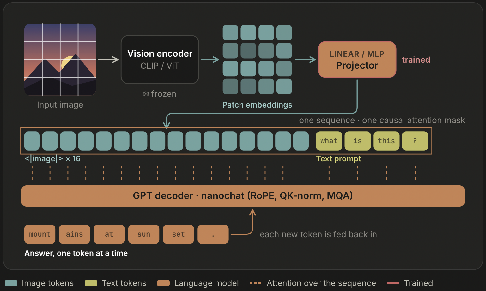

A minimal Vision-Language Model trained end-to-end in the spirit of Karpathy's nanochat — minimal code, full ownership, clear learning value.
Image patches flow through a frozen vision encoder and a trained projector, get fused with text tokens, and attend jointly inside the nanochat GPT decoder.

Byte-level BPE (rustbpe + tiktoken), trained directly on the pretraining corpus.
Special tokens including <|image|> are reserved up front so the vocabulary can carry image placeholders.
GPT-style decoder-only Transformer — rotary embeddings, QK-norm, untied embeddings, ReLU² MLP, parameter-free RMSNorm, Multi-Query Attention. Optimized with Muon + AdamW.
A pretrained vision encoder (CLIP/ViT/DINO) produces patch embeddings, mapped into the LM's
embedding space by a linear/MLP projector. Image tokens are prepended to the text sequence
with a matching attention mask. Currently developed in the notebooks before promotion into src/.
Tokenizer training → base pretraining → vision-projector alignment → multimodal fusion training → chat SFT / eval.
Model size scales with a single depth knob — same scripts run a tiny CPU model or a large multi-GPU model.